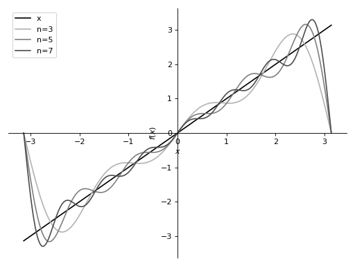
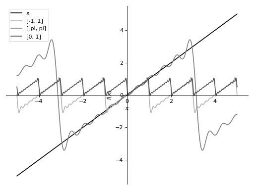

Fourier Series¶
Provides methods to compute Fourier series.
-
class
sympy.series.fourier.FourierSeries(*args)[source]¶ Represents Fourier sine/cosine series.
This class only represents a fourier series. No computation is performed.
For how to compute Fourier series, see the
fourier_series()docstring.See also
-
scale(s)[source]¶ Scale the function by a term independent of x.
f(x) -> s * f(x)
This is fast, if Fourier series of f(x) is already computed.
Examples
>>> from sympy import fourier_series, pi >>> from sympy.abc import x >>> s = fourier_series(x**2, (x, -pi, pi)) >>> s.scale(2).truncate() -8*cos(x) + 2*cos(2*x) + 2*pi**2/3
-
scalex(s)[source]¶ Scale x by a term independent of x.
f(x) -> f(s*x)
This is fast, if Fourier series of f(x) is already computed.
Examples
>>> from sympy import fourier_series, pi >>> from sympy.abc import x >>> s = fourier_series(x**2, (x, -pi, pi)) >>> s.scalex(2).truncate() -4*cos(2*x) + cos(4*x) + pi**2/3
-
shift(s)[source]¶ Shift the function by a term independent of x.
f(x) -> f(x) + s
This is fast, if Fourier series of f(x) is already computed.
Examples
>>> from sympy import fourier_series, pi >>> from sympy.abc import x >>> s = fourier_series(x**2, (x, -pi, pi)) >>> s.shift(1).truncate() -4*cos(x) + cos(2*x) + 1 + pi**2/3
-
shiftx(s)[source]¶ Shift x by a term independent of x.
f(x) -> f(x + s)
This is fast, if Fourier series of f(x) is already computed.
Examples
>>> from sympy import fourier_series, pi >>> from sympy.abc import x >>> s = fourier_series(x**2, (x, -pi, pi)) >>> s.shiftx(1).truncate() -4*cos(x + 1) + cos(2*x + 2) + pi**2/3
-
sigma_approximation(n=3)[source]¶ Return \(\sigma\)-approximation of Fourier series with respect to order n.
Sigma approximation adjusts a Fourier summation to eliminate the Gibbs phenomenon which would otherwise occur at discontinuities. A sigma-approximated summation for a Fourier series of a T-periodical function can be written as
\[s(\theta) = \frac{1}{2} a_0 + \sum _{k=1}^{m-1} \operatorname{sinc} \Bigl( \frac{k}{m} \Bigr) \cdot \left[ a_k \cos \Bigl( \frac{2\pi k}{T} \theta \Bigr) + b_k \sin \Bigl( \frac{2\pi k}{T} \theta \Bigr) \right],\]where \(a_0, a_k, b_k, k=1,\ldots,{m-1}\) are standard Fourier series coefficients and \(\operatorname{sinc} \Bigl( \frac{k}{m} \Bigr)\) is a Lanczos \(\sigma\) factor (expressed in terms of normalized \(\operatorname{sinc}\) function).
- Parameters
n : int
Highest order of the terms taken into account in approximation.
- Returns
Expr
Sigma approximation of function expanded into Fourier series.
Examples
>>> from sympy import fourier_series, pi >>> from sympy.abc import x >>> s = fourier_series(x, (x, -pi, pi)) >>> s.sigma_approximation(4) 2*sin(x)*sinc(pi/4) - 2*sin(2*x)/pi + 2*sin(3*x)*sinc(3*pi/4)/3
Notes
The behaviour of
sigma_approximation()is different fromtruncate()- it takes all nonzero terms of degree smaller than n, rather than first n nonzero ones.References
-
truncate(n=3)[source]¶ Return the first n nonzero terms of the series.
If n is None return an iterator.
- Parameters
n : int or None
Amount of non-zero terms in approximation or None.
- Returns
Expr or iterator
Approximation of function expanded into Fourier series.
Examples
>>> from sympy import fourier_series, pi >>> from sympy.abc import x >>> s = fourier_series(x, (x, -pi, pi)) >>> s.truncate(4) 2*sin(x) - sin(2*x) + 2*sin(3*x)/3 - sin(4*x)/2
-
-
sympy.series.fourier.fourier_series(f, limits=None, finite=True)[source]¶ Computes the Fourier trigonometric series expansion.
- Parameters
limits : (sym, start, end), optional
sym denotes the symbol the series is computed with respect to.
start and end denotes the start and the end of the interval where the fourier series converges to the given function.
Default range is specified as \(-\pi\) and \(\pi\).
- Returns
FourierSeries
A symbolic object representing the Fourier trigonometric series.
Explanation
Fourier trigonometric series of \(f(x)\) over the interval \((a, b)\) is defined as:
\[\frac{a_0}{2} + \sum_{n=1}^{\infty} (a_n \cos(\frac{2n \pi x}{L}) + b_n \sin(\frac{2n \pi x}{L}))\]where the coefficients are:
\[L = b - a\]\[a_0 = \frac{2}{L} \int_{a}^{b}{f(x) dx}\]\[a_n = \frac{2}{L} \int_{a}^{b}{f(x) \cos(\frac{2n \pi x}{L}) dx}\]\[b_n = \frac{2}{L} \int_{a}^{b}{f(x) \sin(\frac{2n \pi x}{L}) dx}\]The condition whether the function \(f(x)\) given should be periodic or not is more than necessary, because it is sufficient to consider the series to be converging to \(f(x)\) only in the given interval, not throughout the whole real line.
This also brings a lot of ease for the computation because you don’t have to make \(f(x)\) artificially periodic by wrapping it with piecewise, modulo operations, but you can shape the function to look like the desired periodic function only in the interval \((a, b)\), and the computed series will automatically become the series of the periodic version of \(f(x)\).
This property is illustrated in the examples section below.
Examples
Computing the Fourier series of \(f(x) = x^2\):
>>> from sympy import fourier_series, pi >>> from sympy.abc import x >>> f = x**2 >>> s = fourier_series(f, (x, -pi, pi)) >>> s1 = s.truncate(n=3) >>> s1 -4*cos(x) + cos(2*x) + pi**2/3
Shifting of the Fourier series:
>>> s.shift(1).truncate() -4*cos(x) + cos(2*x) + 1 + pi**2/3 >>> s.shiftx(1).truncate() -4*cos(x + 1) + cos(2*x + 2) + pi**2/3
Scaling of the Fourier series:
>>> s.scale(2).truncate() -8*cos(x) + 2*cos(2*x) + 2*pi**2/3 >>> s.scalex(2).truncate() -4*cos(2*x) + cos(4*x) + pi**2/3
Computing the Fourier series of \(f(x) = x\):
This illustrates how truncating to the higher order gives better convergence.
>>> from sympy import fourier_series, pi, plot >>> from sympy.abc import x >>> f = x >>> s = fourier_series(f, (x, -pi, pi)) >>> s1 = s.truncate(n = 3) >>> s2 = s.truncate(n = 5) >>> s3 = s.truncate(n = 7) >>> p = plot(f, s1, s2, s3, (x, -pi, pi), show=False, legend=True)
>>> p[0].line_color = (0, 0, 0) >>> p[0].label = 'x' >>> p[1].line_color = (0.7, 0.7, 0.7) >>> p[1].label = 'n=3' >>> p[2].line_color = (0.5, 0.5, 0.5) >>> p[2].label = 'n=5' >>> p[3].line_color = (0.3, 0.3, 0.3) >>> p[3].label = 'n=7'
>>> p.show()
This illustrates how the series converges to different sawtooth waves if the different ranges are specified.
>>> s1 = fourier_series(x, (x, -1, 1)).truncate(10) >>> s2 = fourier_series(x, (x, -pi, pi)).truncate(10) >>> s3 = fourier_series(x, (x, 0, 1)).truncate(10) >>> p = plot(x, s1, s2, s3, (x, -5, 5), show=False, legend=True)
>>> p[0].line_color = (0, 0, 0) >>> p[0].label = 'x' >>> p[1].line_color = (0.7, 0.7, 0.7) >>> p[1].label = '[-1, 1]' >>> p[2].line_color = (0.5, 0.5, 0.5) >>> p[2].label = '[-pi, pi]' >>> p[3].line_color = (0.3, 0.3, 0.3) >>> p[3].label = '[0, 1]'
>>> p.show()
Notes
Computing Fourier series can be slow due to the integration required in computing an, bn.
It is faster to compute Fourier series of a function by using shifting and scaling on an already computed Fourier series rather than computing again.
e.g. If the Fourier series of
x**2is known the Fourier series ofx**2 - 1can be found by shifting by-1.See also
References

{kind=link}
{kind=link}
{kind=link}
{kind=link}